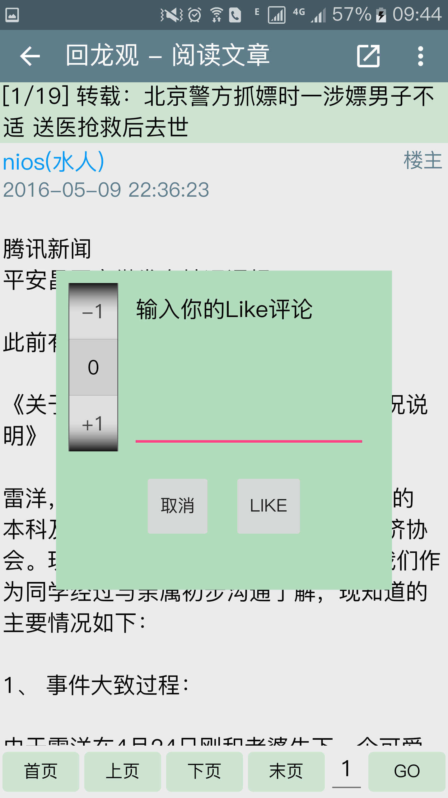
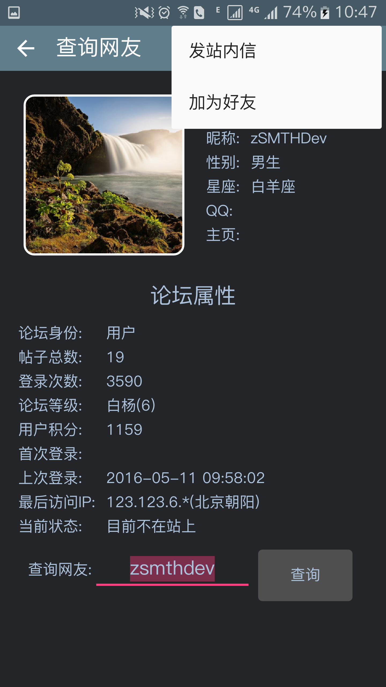

zSMTH 水木社区客户端Android版.
zSMTH是一个无广告、开源的水木社区安卓客户端。iSO平台有同源项目zSMTH-iOS
使用说明（视频）
屏幕截图


提醒：在帖子内容处，长按可以显示操作菜单。
本客户端有如下特色功能：
帖子的图文混排显示，支持GIF动画，长按帖子弹出功能菜单;
支持超长图片的显示；图片附件的全屏查看、缩放; 查看图片Exif信息，保存图片到本地;
显示文章的Like, 增加新的Like;
显示IP来源;
信件、回复、@、Like事件的提醒;
所有版面列表的快速搜索(支持中、英文部分匹配);
分享帖子到SNS网络，包括微信好友、微信朋友圈、新浪微博等.
另有如下功能：
十大导读/分区热贴的加载、下拉刷新、阅读
用户登录, 用户信息的查询, 给用户发站内信，添加用户为好友
收藏夹的加载和本地缓存, 增加(在版面主题列表处增加)和删除(长按删除)
所有版面列表的加载和本地缓存、刷新(菜单中)、快速搜索（支持中、英文部分匹配）
版面主题列表，下拉刷新、上划加载更多主题
版面操作：显示/隐藏置顶、文章搜索、收藏版面
支持文章/合集转寄
支持仅看某ID的文章
文章内容中超链接的自动识别，用浏览器打开，长按复制链接
发文/回帖，支持上载图片附件(一次最多选择5张图片)